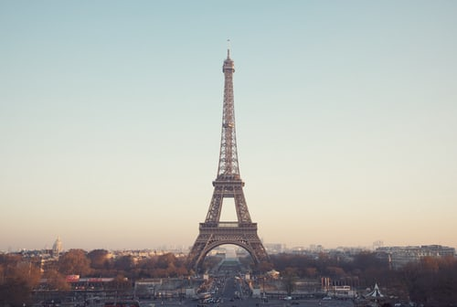
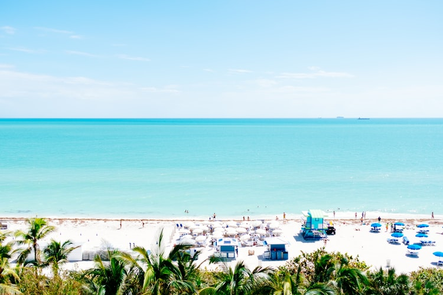

Pacotes Turísticos Exclusivos
Selecionamos os melhores destinos internacionais com hospedagem premium e serviços de excelência
Promoção Especial
R$ 1.500,00

Paris, França
Pacote 5 Noites em Hotel Premium
Explore a capital francesa, conhecida mundialmente pelo seu patrimônio arquitetônico, museus de renome internacional e gastronomia sofisticada. Visite a Torre Eiffel, o Museu do Louvre e passeie pelos bairros históricos de Marais e Montmartre.
- Café da manhã buffet diário
- Conexão Wi-Fi de alta velocidade
- Tour guiado pelos principais museus
Promoção Especial
R$ 1.200,00

Miami, Estados Unidos
Pacote 10 Dias em Miami Beach
Desfrute das praias paradisíacas de Miami, uma das cidades mais vibrantes da Flórida. Experimente a vida noturna sofisticada, compras em bairros exclusivos e a diversidade cultural que caracteriza este destino cosmopolita.
- Café da manhã incluído
- Wi-Fi e amenidades hoteleiras
- Passeio por bairros históricos e modernos
Promoção Especial
R$ 1.400,00

Berlim, Alemanha
Pacote 4 Noites em Berlim
Conheça uma cidade repleta de história e modernidade. Visite sítios históricos de importância mundial, galerias de arte contemporânea, e experimente a vibrante cena cultural e gastronômica de Berlim, um centro criativo europeu.
- Café da manhã continental
- Wi-Fi em todas as dependências
- Tour histórico com especialista
Promoção Especial
R$ 500,00

Fortaleza, Brasil
Pacote 7 Dias em Fortaleza
Descubra o litoral do Ceará com suas praias de águas cristalinas e paisagens naturais exuberantes. Fortaleza oferece uma combinação perfeita entre relaxamento em praias tropicais e exploração de sítios arqueológicos pré-históricos.
- Café da manhã diário
- Conexão Wi-Fi
- Passeio pelas praias principais
Promoção Especial
R$ 200,00

Jericoacoara, Brasil
Pacote 14 Dias em Jericoacoara
Vivencie a autenticidade de um paraíso preservado no interior do Ceará. Jericoacoara é célebre por suas dunas gigantescas, lagoas de água doce e uma comunidade acolhedora que mantém as tradições de um Brasil quase intocado.
- Acomodação e café inclusos
- Conexão disponível
- Excursão de buggy pelas dunas
Promoção Especial
R$ 1.200,00

Moraine Lake, Canadá
Pacote 14 Dias em Moraine Lake
Experiencie a grandiosidade das Montanhas Rochosas canadenses. Moraine Lake é um destino imprescindível para amantes da natureza, oferecendo trilhas de trekking, escaladas e a possibilidade de observar a fauna e flora nativas em seu habitat natural.
- Café da manhã incluído
- Serviços de conexão
- Trilhas guiadas por especialistas